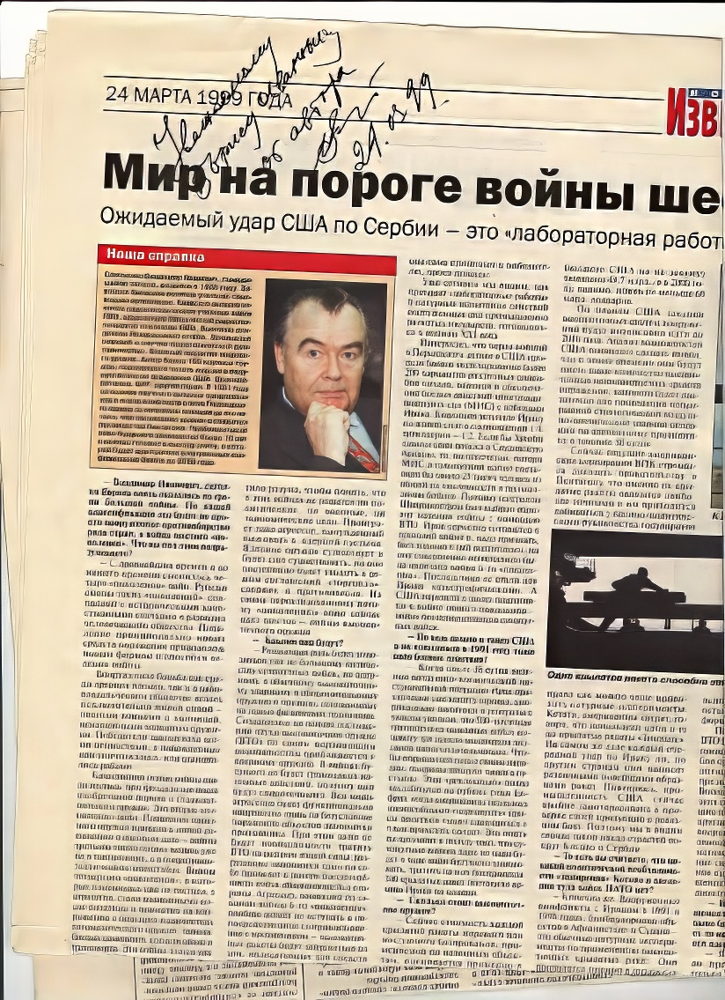
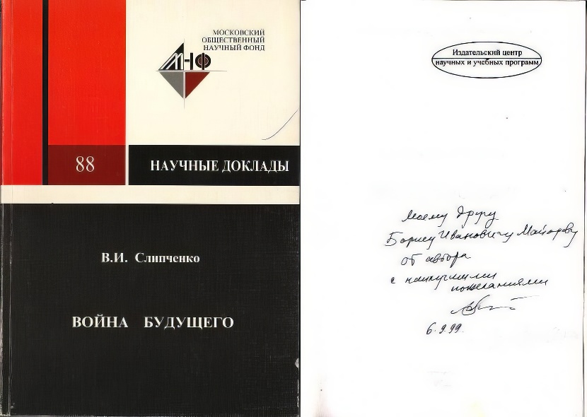
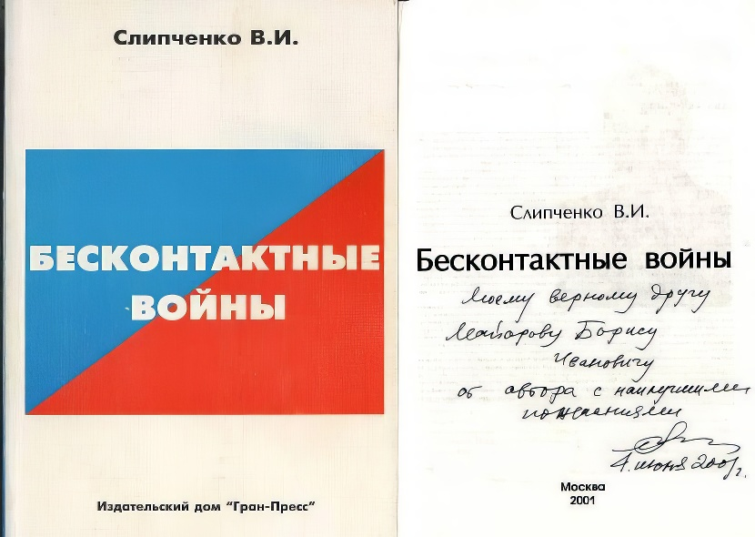

75 - летие со дня рождения Владимира Ивановича Слипченко Мой товарищ В.И.Слипченко родился 03.03.1935 г. в Украине, скоропостижно скончался 5.02.2005г. в Москве. Мы познакомились в 1996 году, когда мне казалось, что опыт наших военных учёных может пригодится обновляемой, демократизирующейся России. Работая преподавателем информатизации, я начал создавать интернет представительство Академии военных наук, на что с энтузиазмом откликнулся и Владимир Иванович.. Хочу сказать, В.И.Слипченко был настоящим учёным, гражданином и скромным человеком. Помню, как он переживал наши военные просчёты, особенно вооружение Ирака на миллиарды долларов и войну в Чечне. Например, в 2002 - 2003 годах многие газеты России пестрели прогнозами новой битвы трудящихся Ирака с агрессорами-империалистами, называемой авторами статей новой Сталинградской битвой.    Б.Майоров 2010 год |